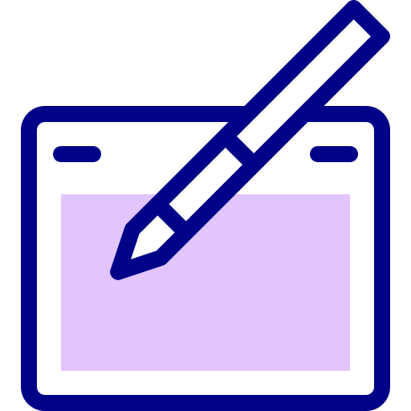

<!DOCTYPE html>
<html lang="en" dir="ltr">

</html>

<head>
  <meta charset="utf-8">
  <meta name="viewport" content="width=device-width, initial-scale=1.0">
  <title>Abdulmalik Yinusa</title>
  <link rel="stylesheet" href="css/styles.css">
  <link rel="icon" href="favicon.ico">
  <link rel="preconnect" href="https://fonts.googleapis.com">
  <link rel="preconnect" href="https://fonts.gstatic.com" crossorigin>
  <link href="https://fonts.googleapis.com/css2?family=Grand+Hotel&family=Merriweather:wght@300&family=Montserrat:wght@300&family=Sacramento&display=swap" rel="stylesheet">
</head>

<body>
  <div class="top-container">
    
    <h1> I'm Abdulmalik.</h1>
    <h2 class="intro">a Front-end Web Developer</h2>
    
    
  </div>

  <div class="middle-container">
    <div class="profile">
      
      <h2><strong>Hello!</strong></h2>
      <p class="info">I'm a Front-end Web developer and a Web Designer, i design and develop beautiful responsive websites that suit your needs.</p>
    </div>
    <hr>
    <div class="skills">
      <h2><strong>My Skills</strong></h2>
      <div class="skill-row">
        
        <h3>Design and Development</h3>
        <p>So, i am dating my computer and it's been a good relationship (Lol! just kidding). I have always been intrigued about tech generally and the unique designs of the interfaces of apps and websites, more like love at first sight. This is why
          i dedicated my time into becoming a Front-end web developer and that's why i'm very good at what i do.</p>
      </div>
      <div class="skill-row">
        
        <h3>Writing</h3>
        <p>I am also a lover of Arts and i see Writing as a necessary skill for everyone to have and this was why i set out to be very good at writing contents related to the tech niche and also took it as a hobby. Do you like writing? if you do,
          then i think we should be friends. </p>
      </div>
    </div>
    <hr>
    <div class="contact-me">
      <h2><strong>Get In Touch</strong></h2>
      <h3>If you need a beautiful design for your website.</h3>
      <p class="contact-message">Want me to design and develop a website for you? or you are also passionate about designs and tech? Do not hesitate to click on any of the links below let's talk and build something amazing together.</p>
      <a class="btn" href="mailto:oabdulmalik99@gmail.com">MY CONTACT</a>
    </div>
  </div>


  <div class="bottom-container">
    <a class="footer-link" href="https://www.linkedin.com/in/abdulmalik-yinusa-8a3008218/">LinkedIn</a>
    <a class="footer-link" href="https://web.facebook.com/profile.php?id=100010935433635/">Facebook</a>
    <a class="footer-link" href="https://wa.link/zcvyi7/">Whatsapp</a>
    <p class="copyright">© 2021 Abdulmalik Yinusa @ Digikrib inc</p>
  </div>

</body>

</html>
